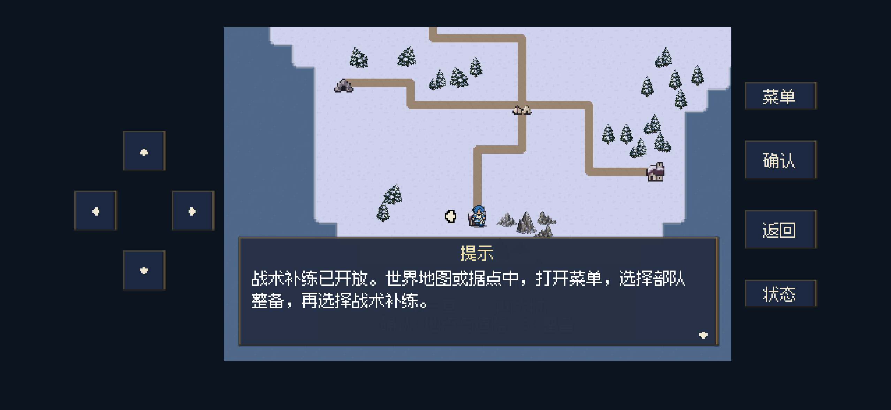
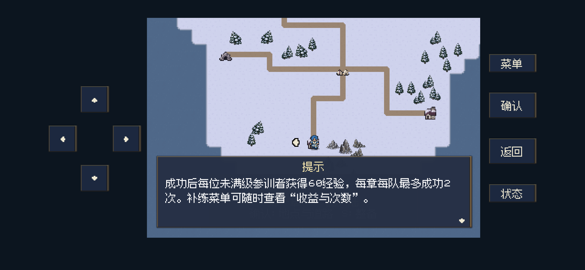
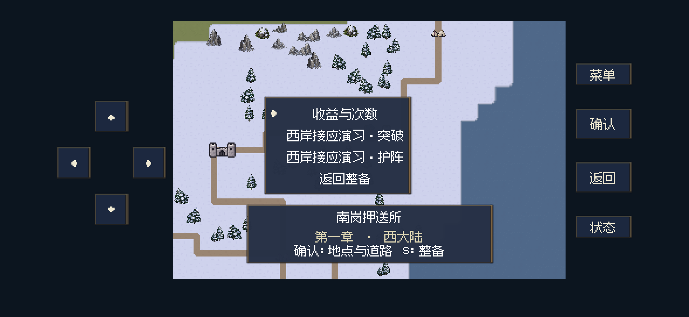
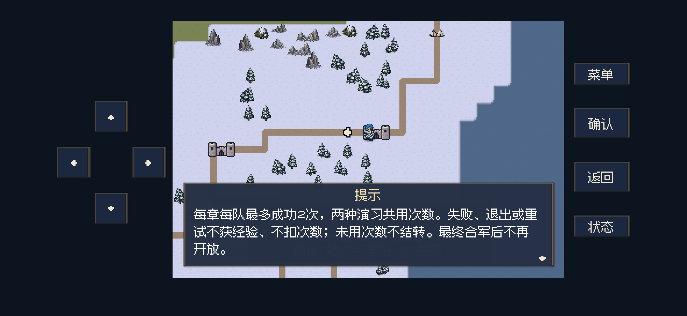
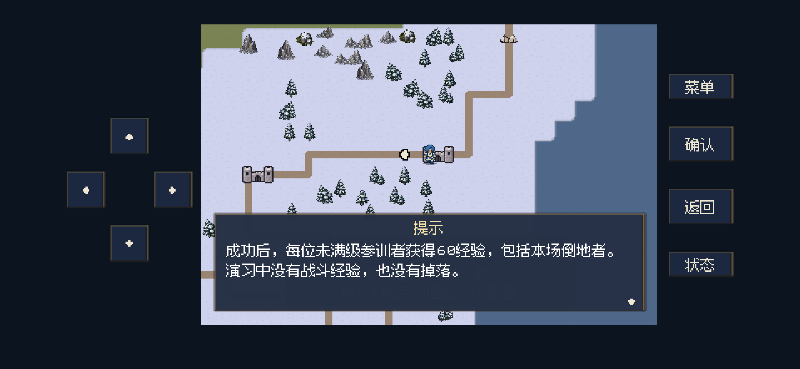
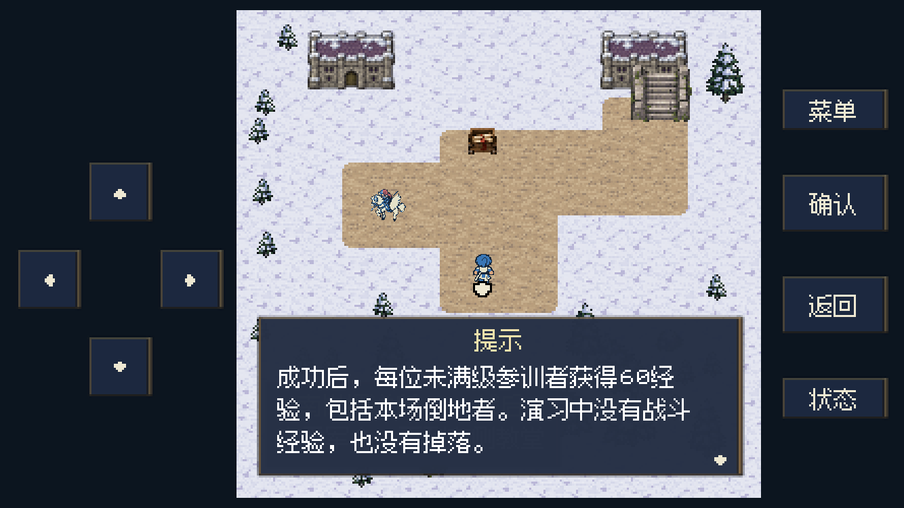
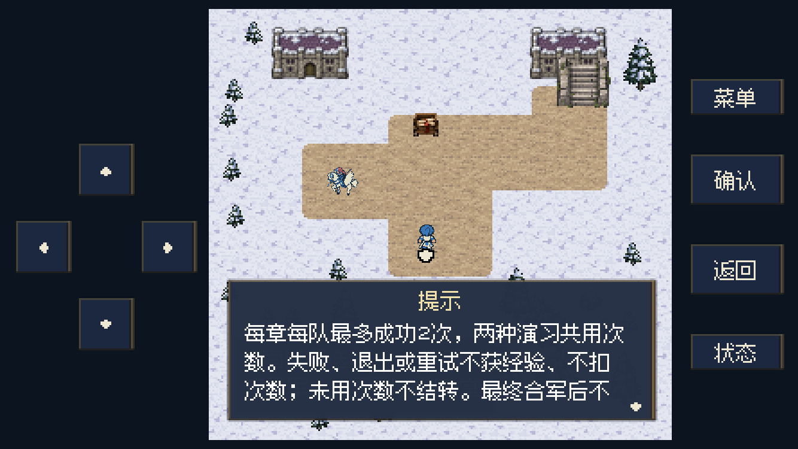
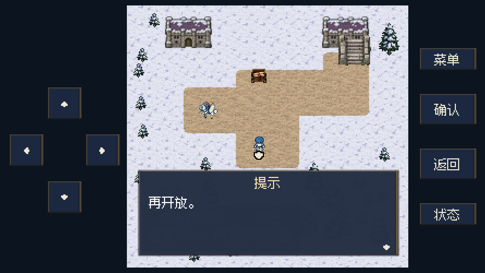

复仇与回忆 · 正式战役 actual · 2026-11-01
补练解锁提示与“收益与次数”
已接入本地源码：M13战后追加一次系统解锁提示；已通关M13的旧记录补看一次；补练菜单增加可反复阅读的“收益与次数”。没有安装或更新iPhone。
一次性解锁提示
新流程在M13战后故事对白之后显示，告知“菜单→部队整备→战术补练”，并说明成功每位未满级参训者60经验、每章每队最多成功2次，以及规则说明入口。
已过M13的旧记录，在首次回到世界地图或据点且操作空闲时补看一次；正在战斗、播放剧情、移动、打开菜单或处理胜负时暂缓。提示记录随存档保存，中途关闭后续读当前提示页，读完不会再次弹出。更晚章节尚未开放补练或已经最终合军时，提示会说明相应开放条件，避免误报当前可进入。
补练菜单：收益与次数
菜单第一项为“收益与次数”，两种演习与返回整备入口保留。说明分两段，较窄布局自动分页；读完回到原世界地图或据点的补练菜单。额度用完后仍能阅读，不发经验、不消耗次数。
成功后，每位未满级参训者获得60经验，包括本场倒地者。演习中没有战斗经验，也没有掉落。
每章每队最多成功2次，两种演习共用次数。失败、退出或重试不获经验、不扣次数；未用次数不结转。最终合军后不再开放。
后台运行画面
以下为Godot后台手机布局渲染，不是真机截图；未显示窗口或抢占用户焦点。点击展开。
一次性解锁提示：入口

一次性解锁提示：收益与次数

补练菜单新增“收益与次数”

规则说明：收益

规则说明：次数

额度用完仍可阅读

较窄手机布局：收益

较窄手机布局：次数第一页

较窄手机布局：次数续页

验证范围
46项无窗口定向检查、56项后台运行与布局检查通过，覆盖新M13结算顺序、旧记录补提示、提示存读档续读、不重复触发、菜单/战斗/已有对白暂缓、重复阅读规则、用完次数仍可阅读、世界与据点返回，以及两种手机尺寸的字形和背景安全区。
本轮为提示与说明修改，没有调整经验、额度或战斗规则；未重新运行全战役，也未安装或更新iPhone。
定向检查 · 后台布局检查 · 图片尺寸与大小 · 验证脚本